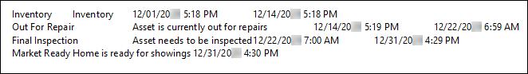
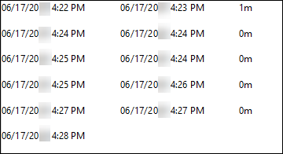

Source: https://rmxhelp.rentmanager.com/Topics/Express/Other/Scripts/Function-Status-History.htm
Status History Function (Script)
This function displays the history of the selected asset's statuses based on the parameters specified.
The default output of the function displays below. The Format parameter can be used to customize this output, as shown in the last example in this topic.

Classes that utilize this function and the location from where the scripting information is pulled in Rent Manager can be found in the table below.
| Class | Syntax |
|---|---|
|
[Asset().StatusHistory()] Displays information found on the View Asset Status page. |
|
|
[Class().Home().StatusHistory()] Displays information found on the View Asset Status page. |
Parameters
Parameters change what the function examines and/or how it displays results. The parameters available to this function are indicated below and must be specified in the order listed in the following syntax. Required parameters must be assigned values for the function to work. For Optional parameters, if no value is provided in the script, Rent Manager uses default values.
[StatusHistory("AssetID","StatusIndex","FromDate","ToDate","Format")]
AssetID
Specify the system-generated asset ID number you wish to examine. If no asset ID is specified, Rent Manager defaults to using the ID of the asset selected before running the script.
[StatusHistory("710")]
Displays status history for the asset with ID number 710.
StatusIndex
Displays a specific line item in the status history. The oldest item in the status history has an index value of 0, the second item has an index value of 1, and so on.
[StatusHistory("","1")]
Displays the first additional status history line item for the selected asset.
FromDate
Specify the date on or after which to examine status history. If no date is specified, the function uses the beginning of time.
[StatusHistory("","","5/4/2026")]
Displays the status history for the asset from May 4, 2026 or after.
ToDate
Specify the date on or before which to examine status history. If no date is specified, the function uses the end of time.
[StatusHistory("","","","12/6/2026")]
Displays the status history for the asset from December 6, 2026 or before.
Format
List details of each status history item using a special format sequence.
Use \t to insert a tab.
Use \n to insert a new line.
Default Format
If no custom format is specified, Rent Manager's default formatting displays the name of the status, from date, and to date variables, separated by tabs:
"\t$_Status\t$_Description\t$_FromDate\t$_ToDate\n"
Variables
The following variables may be used in the Format parameter.
| Variable | Description |
|---|---|
|
$_Comment |
Displays the Comment on the asset status on the Asset Status History tile. |
|
$_CreateDate |
Displays the date and time that the status was assigned. |
|
$_CreateUser |
Displays the username of the Rent Manager user who assigned the specified status. |
|
$_Description |
Displays the Description of the status. |
|
$_Duration |
Displays the amount of time the asset spent in the current status. If the status is currently active, this output is blank. |
|
$_FromDate |
Displays the date and time the selected status began, as shown in the Date field on the Asset Status History tile. |
| $_Status |
Displays the name of the selected status. |
|
$_ToDate |
Displays the date and time the selected status ended. If the status is currently active, this output is blank. |
|
$_UpdateDate |
Displays the date on which this status for the asset was last updated. |
|
$_UpdateUser |
Displays the username of the Rent Manager user who last updated the status. |
StatusHistory("","","","","\t$_Status\t$_Description\t$_Duration\n")
Displays a new line with a customized list of the asset status, its description, and the length of time the status was selected for the asset, separated by tabs for each status history item.
Script Examples
The following scripts show various ways the function can be used:
[Tenant().Home().StatusHistory()]
Displays all status history items for the tenant's first listed home-type asset.
[Asset().StatusHistory("310")]
Displays all status history items for the asset with the system-generated ID number 310.
[Asset().StatusHistory("310","1")]
Displays the second oldest status history item for the asset with the system-generated ID number 310.
[Tenant().Asset().StatusHistory("","","1/1/2026","12/31/2026")]
Displays status history items dated from January 1, 2026 through December 31, 2026 for the selected tenant's first listed asset.
[Asset().StatusHistory("","","","","\$_FromDate\t$_ToDate\t$_Duration\n")]
Displays a new line with a customized list of the date the asset status began, date the asset status was ended, and the amount of time spent in that asset status for each status history item for the selected asset.
The output displays as shown below:
